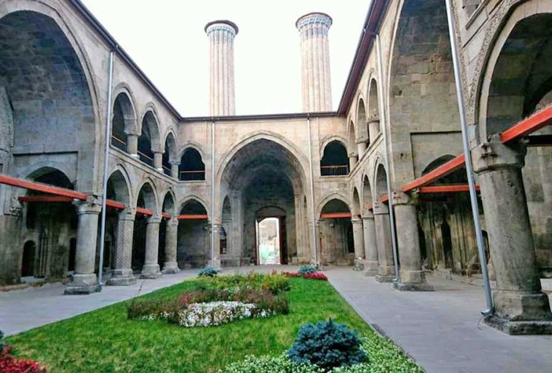

Çifte Minareli Medrese
Erzurum'un simgelerinden biri olan Çifte Minareli Medrese, 13. yüzyıldan kalma Selçuklu dönemine ait bir eserdir. İki minaresiyle dikkat çeken yapı, taş işçiliğinin en güzel örneklerindendir.

Tarihi yapılar ve geleneksel lezzetler
Erzurum'un simgelerinden biri olan Çifte Minareli Medrese, 13. yüzyıldan kalma Selçuklu dönemine ait bir eserdir. İki minaresiyle dikkat çeken yapı, taş işçiliğinin en güzel örneklerindendir.
1310 yılında İlhanlılar döneminde inşa edilen Yakutiye Medresesi, taş işçiliği, çinileri ve mimarisiyle göz kamaştırır. Günümüzde müze olarak kullanılmaktadır.
Şehrin merkezinde yer alan Erzurum Kalesi, Roma döneminden bu yana varlığını sürdürmektedir. İç kale ve saat kulesiyle birlikte şehir manzarasına hâkim bir noktadadır.
Odun ateşinde yatay olarak pişirilen cağ kebabı, Erzurum'un en bilinen lezzetidir. Sacda ısıtılmış lavaş ekmekle birlikte servis edilir.
Kat kat açılan hamurların haşlanıp arasına peynir veya kıyma konulmasıyla yapılan bu börek, Erzurum mutfağının vazgeçilmezlerindendir.
İçine ceviz konularak sarılan kadayıfların kızartılıp şerbetlenmesiyle yapılan bu tatlı, Erzurum'a özgü eşsiz bir lezzettir.